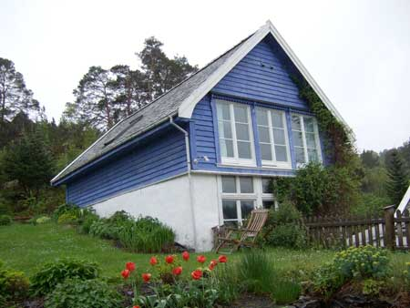

The Icehouse was built around 1920 as a storage for ice. The original
building was only the basement with its 90 cm thick stone walls
covered by a roof. In 1989 the roof was raised to accommodate a flat
of about 60 square meters. This flat was totally renovated in 2006.
All floors are water-heated, the fireplace gives the extra heat needed
on a freezing winter night. It now contains a bedroom with glass
doors, bathroom, kitchen in connection with the large open livingroom.
In the attic there are two beds. A small garden is connected to the
icehouse - when the weather permits its suitable for eating, grilling
etc.
The kitchen is equipped with dishes and cookware for about 6 persons. If you need more, you tell us. Electric cooker with stove, fridge, freezer and dishwasher. Washing machine in the bathroom. TV (only norwegian channels), dvd-player and free internet. A rowing boat with outboard engine can be made available. Parking on the property, beach 150 m away, a lovely forest with many solitary tracks 25 m away and not the least, the city of Bergen 35 minutes away by car.
The Icehouse is available at Airbnb for short or longer stays, listed as Peaceful by the sea, next to Bergen
Send us your message at annex@hanevik.no
Updated: